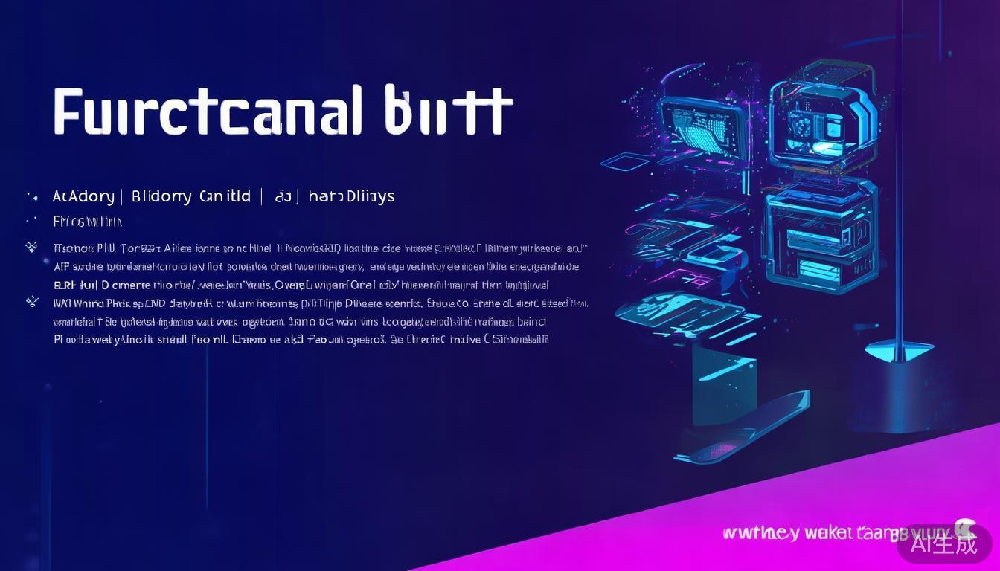

MarketingWriter 营销文案机
18 号毕业设计：MarketingWriter 营销文案机
《MarketingWriter 营销文案机》解决中小商家、运营人员跨平台写文案效率低、风格不匹配、投放无参考的痛点，学完可掌握大模型提示工程、多场景业务封装、Web 服务搭建与营销领域Prompt调优的落地能力。
项目简介
MarketingWriter 是一款面向电商、本地生活、内容运营场景的轻量化营销文案生成工具，基于开源大模型与领域Prompt模板，可根据用户输入的产品信息、目标平台、营销目标，一键生成适配小红书、抖音、朋友圈、公众号、电商详情页等多平台风格的营销文案、广告创意脚本，同时配套给出投放时段、人群定向、内容优化的实操建议，无需专业文案功底即可产出符合平台调性的合规营销内容，项目全程采用Python技术栈，代码量轻、易复现、可快速二次定制为垂直行业文案工具。
功能特性

- 多平台文案一键生成：支持小红书种草文、抖音口播脚本、朋友圈短文案、淘宝详情页卖点、公众号软广5类主流平台内容输出，自动匹配平台话术风格、字数限制、标签规则
- 营销目标定向优化：可选择新品曝光、活动促销、用户召回、转化下单4类核心营销目标，自动调整文案的利益点侧重、行动号召话术
- 创意素材组合生成：自动输出3组差异化标题、5组配套话题标签、2版短平快广告slogan，降低素材 brainstorm 成本
- 投放策略智能建议：结合平台流量规则自动给出最佳发布时段、定向人群标签、评论区引导话术、投流预算分配参考
- 合规性预检：自动识别文案中可能违反广告法的极限词、敏感表述，给出替换建议，避免内容违规下架
- 历史文案管理：本地存储生成记录，支持二次编辑、导出Markdown/纯文本格式，方便团队协作复用
技术架构
| 组件 | 技术选型 | 作用 |
|---|---|---|
| 大模型推理层 | Qwen-7B-Chat / 通义千问API / OpenAI GPT-3.5-turbo | 核心内容生成引擎，支持本地部署开源模型或调用商用API两种模式 |
| 后端服务层 | FastAPI + Pydantic | 提供RESTful接口，处理参数校验、请求调度、结果结构化返回 |
| 提示工程层 | LangChain + 自定义Prompt模板库 | 封装不同平台、不同营销目标的Few-Shot提示模板，实现输出格式稳定可控 |
| 业务规则层 | Python原生 + 广告法敏感词库 | 实现合规校验、投放规则匹配、标签自动生成的业务逻辑 |
| 前端交互层 | Gradio 4.x | 快速搭建可视化交互界面，支持参数选择、结果展示、导出功能 |
| 数据存储层 | SQLite + SQLAlchemy | 本地存储生成历史、用户自定义模板、常用产品信息库 |
架构说明：整体采用分层解耦设计，用户在前端输入产品名称、核心卖点、目标平台、营销目标等参数后，请求先经过参数校验层，再匹配对应场景的Prompt模板，组装Few-Shot示例后传入大模型生成结构化内容，再经过业务规则层做敏感词过滤、投放建议补充，最终返回前端展示；所有生成记录自动存入本地SQLite，支持后续检索复用，模型层可灵活切换开源本地模型或商用API，适配不同算力条件的部署场景。
核心代码骨架
# 核心模块：文案生成服务 service/marketing_generator.py
from langchain.prompts import ChatPromptTemplate
from langchain.chat_models import QianfanChatEndpoint, ChatOpenAI
from pydantic import BaseModel
import re
from utils.sensitive_words import SENSITIVE_WORDS # 本地广告法敏感词库
# 定义入参结构
class MarketingInput(BaseModel):
product_name: str
core_selling_points: list[str]
target_platform: str # 可选值：xiaohongshu/douyin/wechat_moments/taobao/official_account
marketing_goal: str # 可选值：exposure/promotion/recall/conversion
price_info: str = ""
class MarketingWriter:
def __init__(self, model_type="qwen"):
# 初始化大模型，支持切换通义千问/OpenAI
self.llm = QianfanChatEndpoint(model="qwen-turbo") if model_type == "qwen" else ChatOpenAI(model="gpt-3.5-turbo")
# 加载分平台Prompt模板（内置20+行业Few-Shot示例）
self.prompt_templates = self._load_templates()
def _load_templates(self):
# 按平台+营销目标维度加载预写Prompt模板
return {
"xiaohongshu_exposure": "你是小红书资深种草博主，请根据产品信息写一篇300字以内的种草笔记，开头要有共鸣感，分3个卖点讲体验，结尾加引导互动，配5个相关话题标签...",
"douyin_promotion": "你是抖音带货口播编导，请写一篇15秒口播脚本，开头3秒抓注意力，中间讲2个核心福利，结尾加行动指令..."
}
def _check_compliance(self, content: str):
# 敏感词检测与替换
hit_words = [w for w in SENSITIVE_WORDS if w in content]
for w in hit_words:
content = content.replace(w, "**[建议替换为合规表述]**")
return content, hit_words
def _generate_suggestion(self, platform: str, content: str):
# 生成配套投放建议
suggestion_map = {
"xiaohongshu": "建议发布时段：18:00-22:00，定向标签：18-35岁女性、对应品类兴趣人群，评论区提前预埋3条产品体验相关提问引导互动",
"douyin": "建议发布时段：12:00-14:00/19:00-21:00，初始投流预算100元定向相似达人粉丝，完播率高于30%可追加投流"
}
return suggestion_map.get(platform, "")
def generate(self, input_data: MarketingInput):
# 1. 匹配对应Prompt模板
prompt_key = f"{input_data.target_platform}_{input_data.marketing_goal}"
prompt = ChatPromptTemplate.from_template(self.prompt_templates[prompt_key])
# 2. 组装参数调用大模型
chain = prompt | self.llm
raw_content = chain.invoke({
"product_name": input_data.product_name,
"selling_points": "、".join(input_data.core_selling_points),
"price": input_data.price_info
}).content
# 3. 合规校验
final_content, hit_words = self._check_compliance(raw_content)
# 4. 拼接投放建议
suggestion = self._generate_suggestion(input_data.target_platform, final_content)
return {
"copywriting": final_content,
"compliance_hit": hit_words,
"launch_suggestion": suggestion
}运行步骤
- 环境准备：安装Python 3.10+，创建并激活虚拟环境，执行
pip install fastapi uvicorn gradio==4.29.0 langchain==0.1.16 langchain-community qianfan sqlalchemy python-multipart安装全部依赖。 - 模型配置：若使用商用API，在项目根目录创建
.env文件，填写QIANFAN_AK=你的百度智能云AK、QIANFAN_SK=你的百度智能云SK（或OPENAI_API_KEY=你的密钥）；若使用本地开源模型，提前下载Qwen-7B-Chat量化版并配置model_path参数。 - 初始化数据库：执行
python init_db.py，自动创建SQLite数据库文件、敏感词表、历史记录表、自定义模板表。 - 启动后端服务：在项目根目录执行
uvicorn backend.main:app --host 0.0.0.0 --port 8000，启动后可访问http://localhost:8000/docs查看接口文档。 - 启动前端界面：新开终端执行
python frontend/app.py，Gradio服务默认启动在http://localhost:7860，即可进入可视化操作页面。 - 功能测试：在页面输入测试产品信息，例如产品名「冷萃即溶黑咖啡」，核心卖点「0糖0脂、3秒速溶、酸度低不苦」，目标平台选「小红书」，营销目标选「促销」，点击生成即可查看输出的文案、合规提示与投放建议。
- 导出使用：生成结果支持一键复制、导出为Markdown文件，历史记录可在「我的文案」tab下查看、二次编辑。
扩展思路
- 垂直行业定制：针对美妆、餐饮、家居等特定行业补充专属Few-Shot样本库，增加行业专属卖点提取、违禁词规则，将工具升级为垂直行业营销SaaS。
- 多模态能力扩展：接入文生图模型（如Stable Diffusion），在生成文案的同时配套生成产品海报、短视频封面图提示词，甚至对接剪映API自动生成短视频成片。
- 数据反馈闭环：增加文案效果回收模块，支持用户录入文案发布后的阅读量、转化率数据，自动微调Prompt模板或小参数Lora模型，实现生成效果越用越准。
- 多账号矩阵支持：对接各平台开放API，实现文案生成后一键定时发布到绑定的小红书、抖音、公众号账号，配套数据看板统一管理多平台内容效果。
小结与练习
项目收获
- 掌握了营销领域Prompt工程的设计方法，理解Few-Shot样本、角色设定、输出格式约束对大模型生成稳定性的影响，能够独立设计垂直场景的提示模板。
- 掌握了FastAPI+Gradio快速搭建AI应用的全流程，理解大模型应用分层架构的设计思路，能够独立完成从接口开发到前端交互的最小可用产品落地。
- 掌握了大模型应用的业务规则层设计方法，能够将合规校验、领域规则、业务建议等确定性逻辑与大模型生成能力结合，避免纯大模型输出的不可控问题。
动手练习
- 现有模板仅支持5类平台，请补充「知乎好物推荐」场景的Prompt模板与对应的投放建议规则，测试生成一篇300字以上的知乎好物风格咖啡机推广文案，确保内容符合知乎「专业、真实、有干货」的内容调性。
- 改造现有生成逻辑，实现一次输入同时生成3版不同风格的文案（理性卖点版、情感共鸣版、福利促销版），并在前端增加版本对比tab，方便用户选择最合适的内容。
本项目为本站 AI 学院「毕业设计」板块原创教学项目，由 AI 生成原型并整理，以官方文档与真实开源生态为准。 技术栈均基于公开、主流的开源库（如 Transformers / LangChain / FastAPI / SQLite 等），可对照各库官方仓库核验。 如引用第三方开源项目，请遵循其原始许可证（MIT / Apache-2.0 / BSD 等）；本项目内容可按 MIT 协议自由使用，标注出处即可。